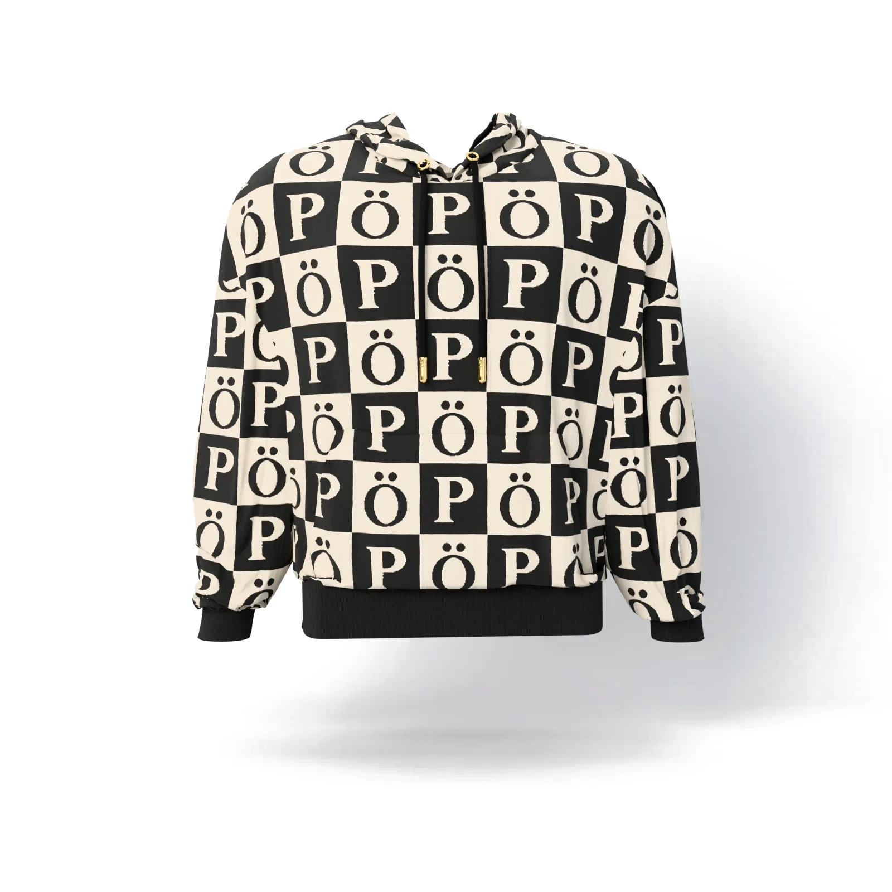
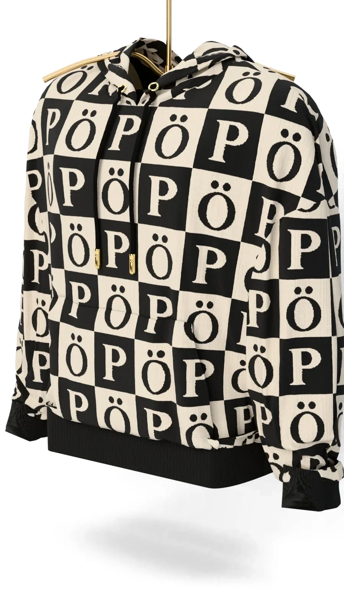
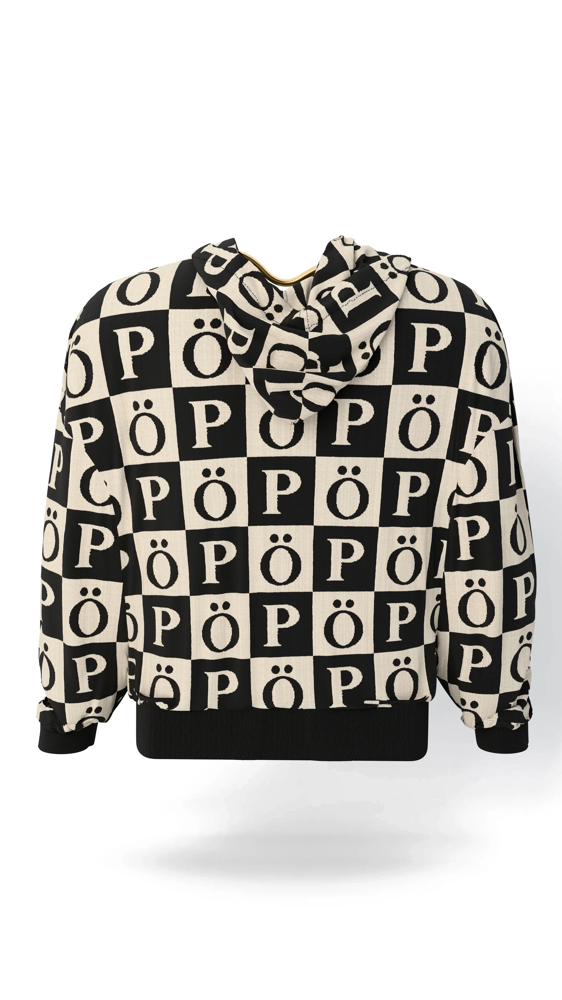
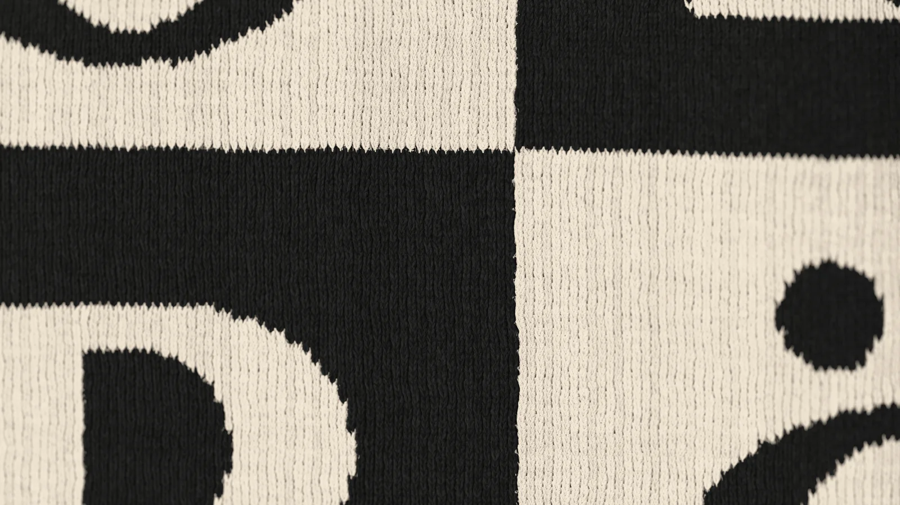
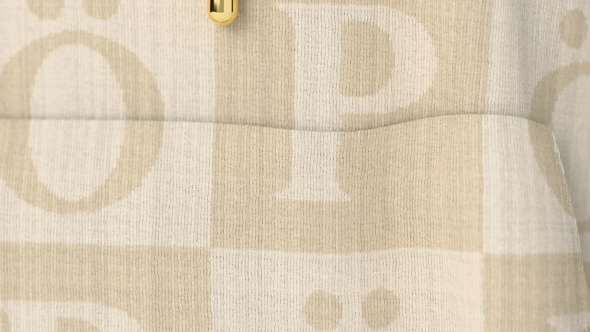
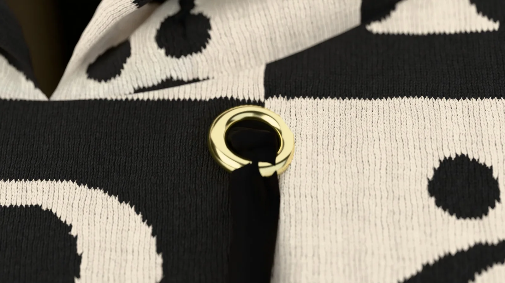
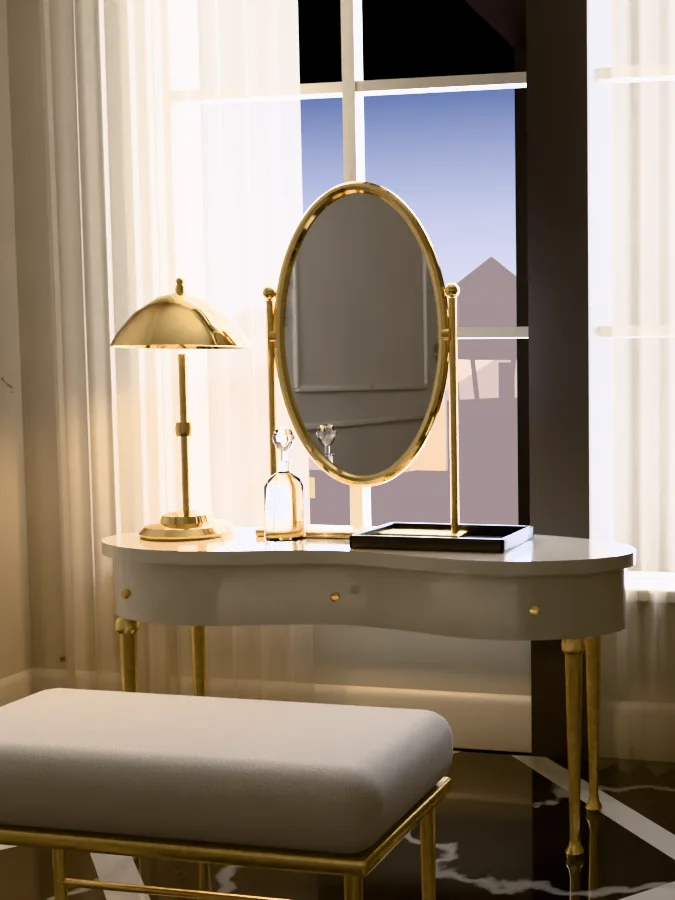

STAND-IN · img/cantilena/front/master.* (departments/apparel/new-pieces-2026-11/build/cantilena/site/cantilena_front_16k.png; 16K, 8640 × 15360)




Chapter I · Knitwear
Cantilena
Monogram knit hoodie
A song that keeps returning to the same few notes: the PÖ said again and again, in black and cream, or cream on cream.
- KNIT
- 28-GAUGE DOUBLE JACQUARD, THE PÖ CHECKER
- WEIGHT
- 300 GSM
- YARN
- 30S COMBED COTTON
- COLOURWAY
- CREAM ON CREAM · BLACK AND CREAM
- SIZE
- S · M · L · XL · XXL
Made to order. Delivery date confirmed by email.
Delivered in the house box.
Details
- Made to order
- Made to order. We email your delivery date once production is confirmed. Cancel for a full refund any time before production starts.
- Returns
- Size exchanges within 14 days of delivery, unworn and with tags. Returns
- Care
- Wash cold, inside out, on a gentle cycle. Dry flat. No tumble dryer, no bleach. Care
- Size
- The measurements

STAND-IN · img/cantilena/world/master.* (C9: the last frame, the world plate (the suite, by day); 8K, 5760 × 7680)Where it is going · C9
The suite, by day
The vanity stool, pulled out and turned to the door.
On the screen in the film, the picture is tomorrow: each piece in the place it is going, with one place kept for someone.
The maker’s notes
Cantilena, the PÖ hoodie
- It begins as a chart: a checker of squares, each 88 stitches by 133 rows, 8.0 by 8.3 cm.
- A light P sits on each dark square, a dark Ö on each light one.
- It comes in two colours: black and cream, or cream on cream, a darker cream in the black’s place.
- The rows run level across the body, a square centred on the centre line; the sleeves take whole squares from the cuff.
- The hood is two panels, the checker knitted whole on each, a light square meeting a dark one along the centre seam.
- It is the house knit, the rib and cords in the darker yarn, the cords through brass eyelets, ending in brass tips.
Behind it: the checker runs on unbroken into the hood’s facing, the same cloth rolled inward.
Read the poem